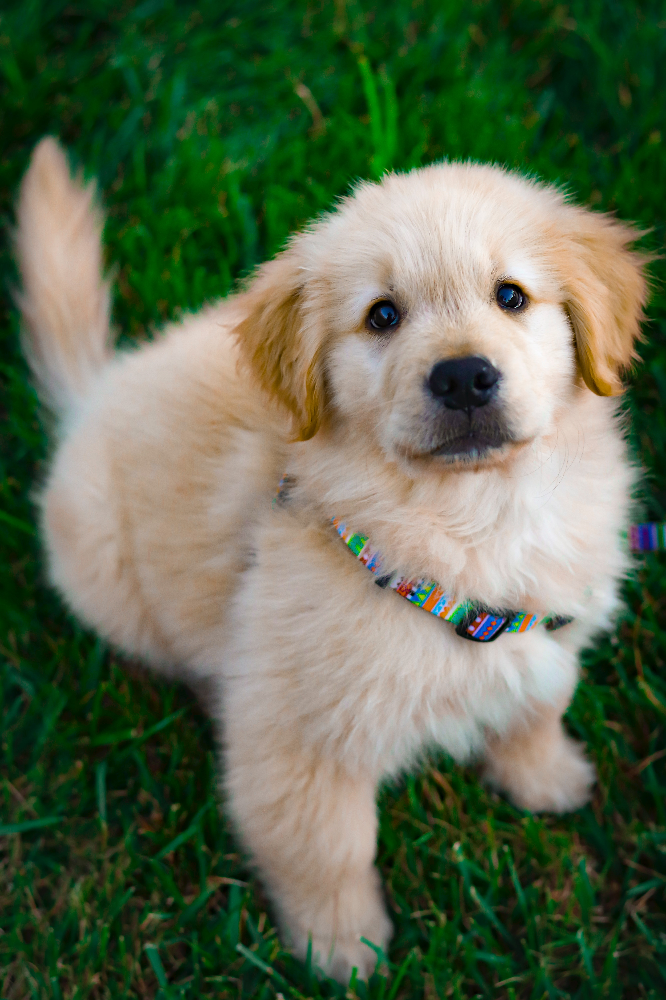
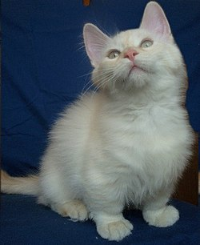

Pūkis

Sibiro haskių istorija yra viena žavingiausių ir įdomiausių. Manoma, kad šios veislės šunys gyveno su čiukčių tauta šiaurės rytų Sibire prieš 3000 metų. Gyveno ten, kur žiemą temperatūra nukrenta žemiau -30° C šalčio ir kur nuolat siautėja pūgos... Šie šunys buvo pagrindinė susisiekimo priemonė, jie buvo naudojami kinkiniuose. Kinkinyje būdavo net iki 20 šunų. Įkinkyti šunys su varovu įveikdavo ilgas distancijas – kartais nukeliaudavo iki 160 kilometrų.
Hercas
Auksaspalvis retriveris yra idealus kompanionas, ištikimas šuo, mylintis visus šeimos narius. Kiekvieną žmogų ir gyvūną jis pasitinka vizgindamas uodegą, puikiai sutaria su visais. Tai grožio ir proto vienoje šuns veislėje harmonija. Auksaspalviai retriveriai yra ištikimi ir paklusnūs, ramaus būdo ir inteligentiškų manierų. Jie netinka sargauti.
Mačo

Prancūzų buldogų skiriamasis bruožas – didelės ausys, dėl kurių šuo neretai primena šikšnosparnį. Tai yra nedideli, tačiau labai tvirti šunys, pasižymintys žaismingumu ir neišsenkančia energija. Prancūzų buldogas yra užsispyręs, tačiau labai gudrus šuo – savo intelektinius sugebėjimus dažniausiai naudoja savų tikslų siekimui. Paprastai sutaria su visais šeimos nariais, mielai žaidžia su vaikais, nevengia kitų šunų ar kačių draugijos. Nors prancūzų buldogai yra nedideli, tačiau tokie tikrai nesijaučia – jei reikės, būtinai stos ir prieš dešimtį kartų didesnį „priešą“.
Blusius

Norvegų miškinė katė (angl. Norwegian Forest cat, norv. Norsk skogkatt) – natūrali pusiau ilgaplaukių kačių veislė. Labai panaši į Meino meškėno veislės kates, dėl to dažnai painiojamos. Norvegų miškinės katės galva trikampė, tiesi, o Meino meškėno katės snukutis ilgesnis, kampuotesnis.
Momo
Trumpakojė katė, arba Munčkinas (angl. Munchkin) – mutacinė kačių veislė. Išskirtinė savybė – labai trumpos kojos. Tai pakankamai nauja veislė, atsiradusi JAV, o vėliau paplitusi ir Prancūzijoje.
Kenzas

Australijos aviganis - turi labai stiprius ganymo ir saugojimo instinktus, o ištvermė ir energija tiesiog neišsemiama. Tai ištikimi, paklusnūs šunys, stipriai prisirišę prie savo šeimininko, tačiau ne visuomet labai lengvai prisileidžiantys svetimus žmones ar gyvūnus.
Nimrodas

Škotų nulėpausis katinas. Šių kačių skiriamasis bruožas — ypatinga ausų forma ir jų mokėjimas stovėti ant užpakalinių kojų. Dėl tokių ausų jos laikomos vienomis iš įdomiausių kačių. Tuo pačiu šios katės yra vienos iš protingiausių, nes jos puikiai bendrauja ir mėgsta judrius žaidimus.